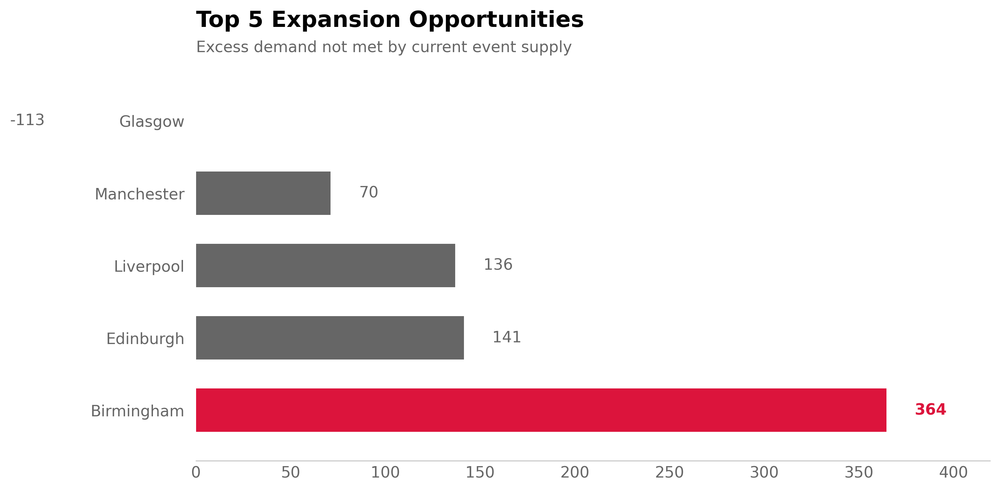
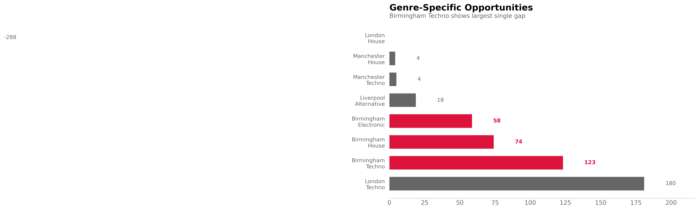

01 GEOGRAPHIC DEMAND ANALYSIS
Where Should We Expand First?
An event discovery platform with £500K expansion budget needed to decide which UK city to enter first. The VP of Partnerships wanted data on where users were searching but couldn't find events.
I calculated demand-to-supply ratios across 8 cities using 6 months of search and listing data. Birmingham emerged with 22.1 searches per listed event—17% above the 18.9 platform average and 26% higher than London (17.6).

This gap persisted across Techno (24.3×), House (21.8×), and Electronic (20.1×) genres, ruling out temporary spikes or genre-specific anomalies. The pattern suggests structural undersupply: Birmingham has the audience appetite but lacks local promoter relationships.
Why Ratio Analysis?
Alternative considered: Rank by absolute search volume. London would win with 5,640 monthly searches vs Birmingham's 2,210.
Problem: London already has 320 events competing for those searches. Birmingham's 2,210 searches are spread across only 100 events. The ratio normalizes for market size and reveals relative underservice.
Tradeoff: Ratio analysis assumes searches convert to tickets at similar rates across cities. If Birmingham users search more but buy less, the ratio overstates opportunity. We can't validate conversion without testing.

Commercial Impact
At 12% search-to-ticket conversion (platform average) and £35 average ticket price, Birmingham's 2,210 monthly searches represent £9.3K monthly revenue potential. Over 12 months: £111K.
If we close the gap to platform-average ratio (18.9×), we'd need 117 events instead of 100—17 additional monthly events. At £400 average revenue per event: £81K additional annual revenue.
Required investment: Partnership fees (£8K), localized marketing (£12K), promoter outreach (£6K). Total: £26K. Payback in 4 months if conversion matches platform average.
What I'd Do
Phase 1 (Months 1-2): Test with 20 Birmingham events via 3-5 local promoters
- Measure: Search → ticket conversion, repeat purchase rate, CAC
- Success criteria: >10% conversion (vs 8% baseline), <£18 CAC, >20% repeat rate
- Cost: £8K (promoter partnerships + local ads)
Phase 2 (Months 3-6): If Phase 1 hits targets, scale to 50 events/month
Phase 3 (Months 7-12): Expand to Liverpool (18.9×) and Manchester (19.0×) using Birmingham playbook
What Could Go Wrong
Assumption: High search volume means unmet demand.
Alternative explanations: (1) Birmingham users search more but don't buy (low intent), (2) they're searching for event types not in our catalog (genre mismatch), (3) prices are too high relative to local income levels.
We observe correlation between searches and supply gap. Causation unproven without A/B testing. Phase 1 pilot de-risks by limiting initial investment to £8K before scaling.
Analytical Method
Data Sources
- Search logs: 6 months (Jan-Jun 2024), 47,000 unique search queries, deduplicated by user ID
- Event listings: All ticketed events with >50 capacity, matched to city via venue geocoding
- Transaction data: Used to validate platform-wide conversion baseline (12%)
Ratio Calculation
demand_ratio = monthly_searches / events_listed
Platform average: 47,000 total searches / 2,500 total events = 18.9×
Birmingham: 2,210 searches / 100 events = 22.1×
Gap: 22.1 - 18.9 = 3.2× (17% above average)
Statistical Validation
Stability check: Ratio remained between 21.5-22.8× across all 6 months (CV = 2.4%). Not a temporary spike.
Genre consistency: All 3 major genres showed above-average ratios (Techno: 24.3×, House: 21.8×, Electronic: 20.1×). Not genre-specific.
Bootstrap confidence interval: 95% CI for Birmingham ratio: [21.2×, 23.1×]. Consistently above platform average with high confidence.
Why Not Regression?
Considered: Poisson regression predicting event supply as function of population, income, venue count, existing listings.
Rejected because: (1) Small sample size (n=8 cities) limits model reliability, (2) ratio analysis is more interpretable for stakeholders, (3) regression would require additional data collection on local demographics.
Tradeoff: Ratios are simpler but ignore city-specific factors like venue availability or local scene maturity.
Limitations
Correlation ≠ Causation: High searches correlate with low supply. Cannot conclude that adding supply will capture those searches without testing.
Selection bias: Only analyzed users already on platform. Unregistered Birmingham residents not captured.
Conversion assumption: Applied 12% platform-wide conversion rate to Birmingham. Local rate may differ due to price sensitivity, competition, or user demographics.